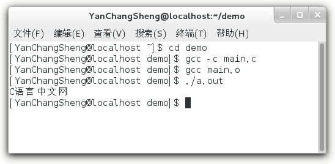

首页 > 编程笔记
GCC分步骤编译C语言程序
上节《GCC编译C语言程序完整演示》讲解的是通过
本节将涉及到C语言程序的生成原理，如果你不了解，请转到《C语言入门教程》学习。
本节以下面的C语言代码为例进行演示：
 对于微软编译器（内嵌在 Visual C++ 或者 Visual Studio 中），目标文件的后缀为
对于微软编译器（内嵌在 Visual C++ 或者 Visual Studio 中），目标文件的后缀为
一个源文件会生成一个目标文件，多个源文件会生成多个目标文件，源文件数目和目标文件数目是一样的。通常情况下，默认的目标文件名字和源文件名字是一样的。
如果希望自定义目标文件的名字，那么可以使用
在
使用
下面是一个完整的演示：
gcc命令一次性完成编译和链接的整个过程，这样最方便，大家在学习C语言的过程中一般都这么做。实际上，gcc命令也可以将编译和链接分开，每次只完成一项任务。本节将涉及到C语言程序的生成原理，如果你不了解，请转到《C语言入门教程》学习。
本节以下面的C语言代码为例进行演示：
#include <stdio.h>
int main()
{
puts("C语言中文网");
return 0;
}
1) 编译（Compile）
将源文件编译成目标文件需要使用-c选项，例如：
gcc -c main.c
就将 main.c 编译为 main.o。打开 demo 目录，就会看到 main.o：.obj；对于 GCC 编译器，目标文件的后缀为.o。一个源文件会生成一个目标文件，多个源文件会生成多个目标文件，源文件数目和目标文件数目是一样的。通常情况下，默认的目标文件名字和源文件名字是一样的。
如果希望自定义目标文件的名字，那么可以使用
-o选项，例如：
gcc -c main.c -o a.o
这样生成的目标文件的名字就是 a.o。2) 链接（Link）
在gcc命令后面紧跟目标文件的名字，就可以将目标文件链接成为可执行文件，例如：
gcc main.o
就将 main.o 链接为 a.out。打开 demo 目录，就会看到 a.out。在
gcc命令后面紧跟源文件名字或者目标文件名字都是可以的，gcc命令能够自动识别到底是源文件还是目标文件：如果是源文件，那么要经过编译和链接两个步骤才能生成可执行文件；如果是目标文件，只需要链接就可以了。使用
-o选项仍然能够自定义可执行文件的名字，例如：
gcc main.o -o main.out
这样生成的可执行文件的名字就是 main.out。下面是一个完整的演示：
$ cd demo
$ gcc -c main.c
$ gcc main.o
$ ./a.out
C语言中文网
$

关注公众号「站长严长生」，在手机上阅读所有教程，随时随地都能学习。内含一款搜索神器，免费下载全网书籍和视频。

微信扫码关注公众号